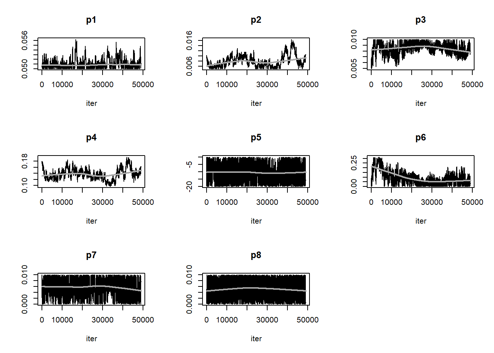
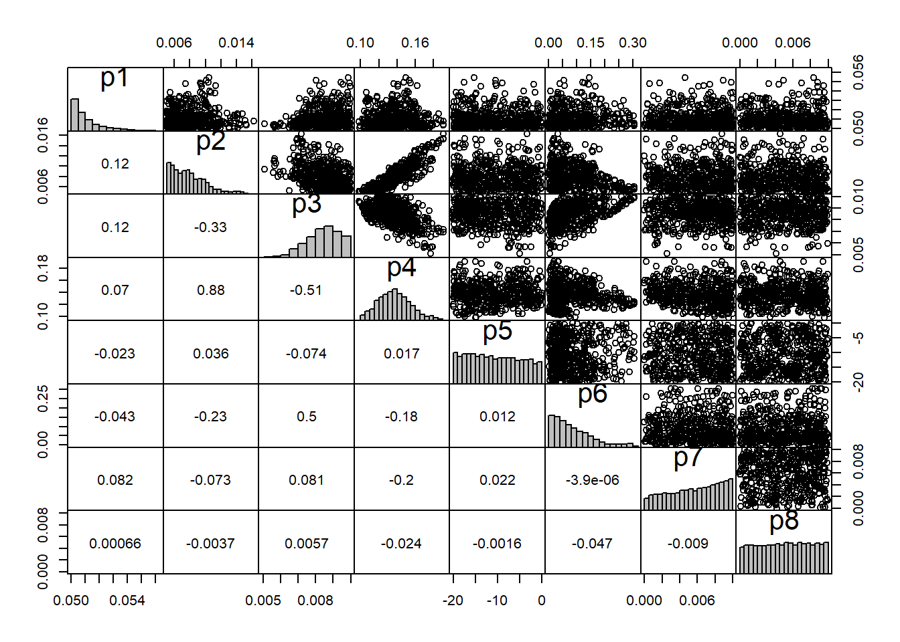
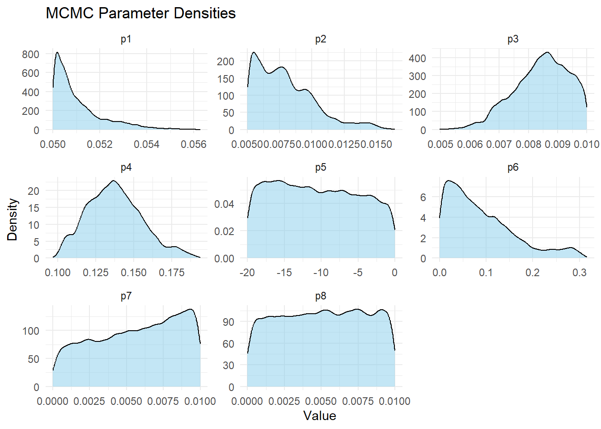
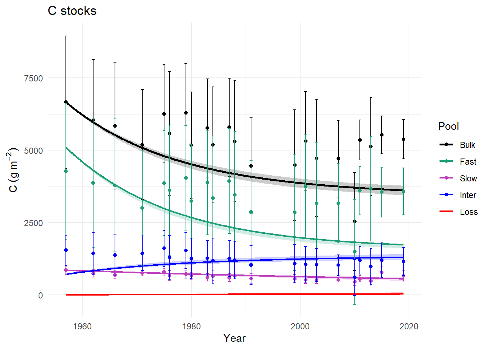
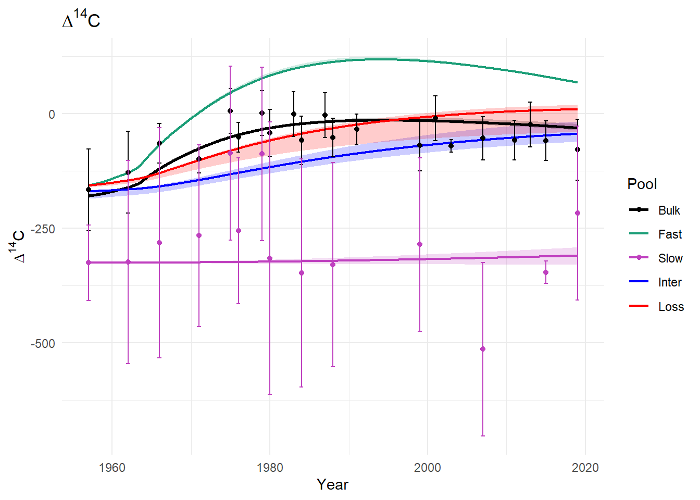
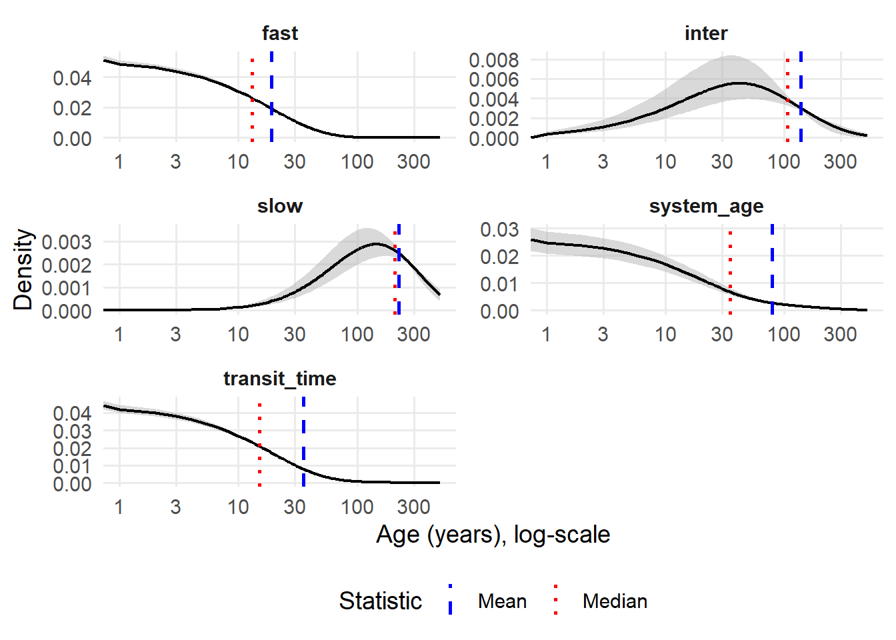
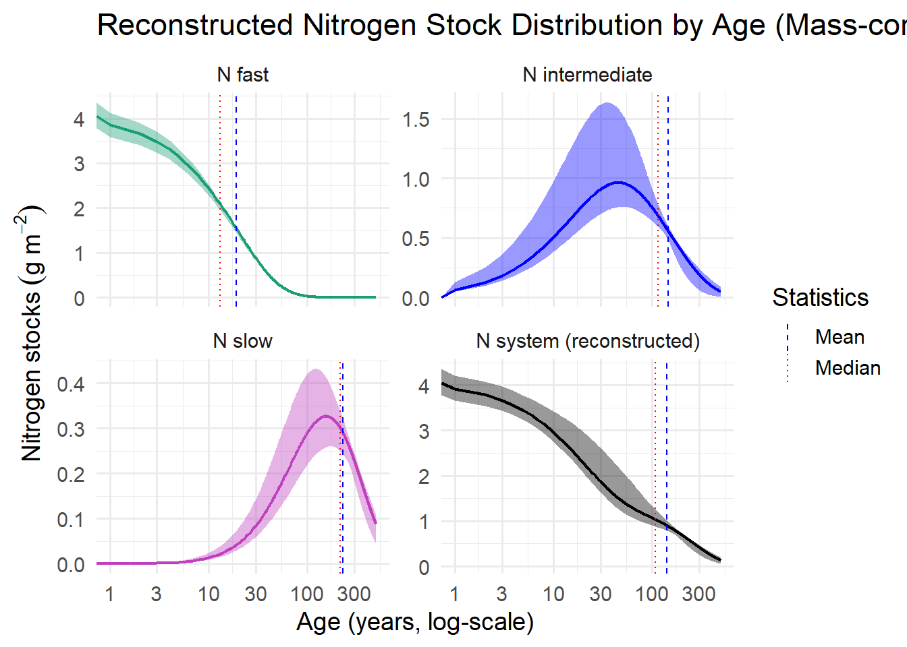
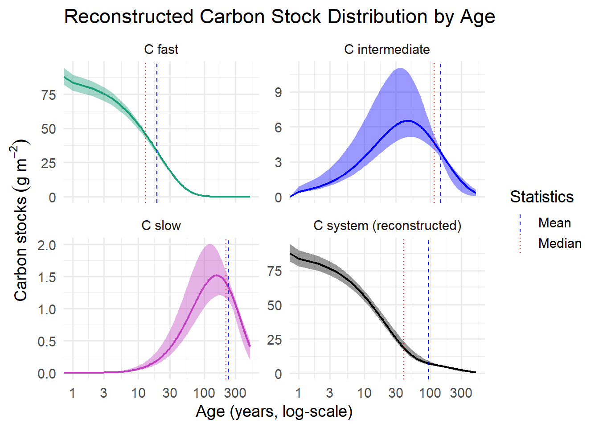

Par Value
1 kf 0.050671011
2 ki 0.006870266
3 ks 0.008281559
4 alpha21 0.127814991
5 F0ib -3.173505885
6 alpha32 0.127895915
7 alpha41 0.003506663
8 alpha42 0.005564194Teneille’s project repository is available on Github at this link.
Four agricultural sites were established in Sweden (M2, M4, M6 and R94) and soils were sampled from 1957 - 2019. Bulk soil samples were fractionated by thermal combustion, isolating two pools (325-\(^\circ\)C- and 400-\(^\circ\)C-stable carbon). Carbon content and radiocarbon signatures of the samples were measured, mean soil bulk density was determined and plant-derived carbon inputs were estimated.
We grouped data by year and sample type (bulk and thermal stability fractions) and calculated averages and uncertainties for carbon stocks and radiocarbon. We calculated carbon stocks in the fast pool by subtracting the 325-\(^\circ\)C-stable pool from bulk soil, and carbon stocks in the intermediate pool by subtracting the 400-\(^\circ\)C-stable pool from the 325-\(^\circ\)C-stable pool.
The SoilR package includes functions that help us simulate how carbon moves between pools and decomposes over time. We built a soil carbon model (script available here) that splits carbon into four pools: fast, intermediate, slow, and carbon lost by some process (potentially erosion). We gave the model:
• Constant carbon inputs estimated from literature values
• Observed bulk and organic fraction carbon stocks
• Bulk soil radiocarbon measurements
• Atmospheric radiocarbon data
Then we fitted the model to the data using optimization by a cost function (FME), which finds the best parameters (e.g. decomposition rates and transfer between pools) so that the model matches observed carbon stocks and radiocarbon values. These modeled parameters were used to define a range in which to explore many other possible parameter combinations using a Monte Carlo Markov Chain (MCMC) method (from FME). We plotted density curves of the accepted parameters to show likely parameter values. We also checked correlations between parameters and trace plots to make sure the algorithm converged.
Key points
We obtained converged modeled values for most parameters. The best-performing model parameter values are listed below as kf, ki, ks (fast, intermediate and slow pool decomposition rates), alpha21 (coefficient indicating proportion of C transfer from fast to slow pool), F0ib (a value that is subtracted from initial bulk radiocarbon measurement to find the initial intermediate radiocarbon value), alpha32 (transfer coefficient from intermediate to slow pool), alpha41 and alpha42 (transfer from fast and intermediate pools to the “loss” pool). We observe moderate C transfer fast to intermediate and then to the slow pool and a low transfer of carbon to the “loss pool”.



Par Value
1 kf 0.050671011
2 ki 0.006870266
3 ks 0.008281559
4 alpha21 0.127814991
5 F0ib -3.173505885
6 alpha32 0.127895915
7 alpha41 0.003506663
8 alpha42 0.005564194We used samples of MCMC parameter sets to run the model many times using different combinations of modeled parameters, which let us estimate uncertainty in model predictions. We plotted the observed carbon stocks and radiocarbon measurements (points with error bars) over time, with the minimum and maximum model predictions at each time point included in the shaded ribbon of uncertainty.
Key points
We found low model uncertainty for radiocarbon and carbon stocks. The transfer of C to the “loss pool”, although slow, explains the lack of accumulation of modern atmospheric radiocarbon in the bulk soil over time, because if the low radiocarbon incorporation in bulk soil were due to decomposition, there would be higher fast-pool decomposition rates, which would have resulted in more decreases in carbon stocks than we observed.


We used our model to estimate how long carbon stays in the soil system and in each pool (fast, intermediate, and slow). To capture uncertainty, we took many different parameter combinations from our MCMC results and ran the model for each one. For every run, we calculated mean system age, mean pool ages, and mean system transit time. We then combined all runs to calculate the range of uncertainty. We converted modeled age distributions into real amounts of carbon and nitrogen at each age at steady-state (taken as the final year) by scaling them with pool sizes from the best model. Then we used MCMC runs to add uncertainty ranges. The summary table shows the amount of carbon and nitrogen stocks
Key points
Fast-cycling carbon and overall system transit time are well constrained, while slower pools have much wider uncertainty. The fast-cycling pool has a relatively high mean age, potentially due to the climate (slower decomposition), or management-related factors (e.g. labile C losses accelerated by tillage). The intermediate-cycling pool is closer in cycling rate to the slow pool than the fast pool, potentially due to the high temperature of combustion removing more of the faster-cycling carbon. The mean ages of the pools are skewed right relative to the median, indicating the weighted contribution effect of older carbon.

variable mean median q25 q75 q05 q95
1 system_age 79.1 35 11 108 1 307
2 fast 19.1 13 5 26 0 58
3 inter 137.1 106 54 191 18 365
4 slow 224.3 208 129 308 56 443
5 transit_time 35.1 15 6 35 0 146

# A tibble: 8 × 6
variable total_stock mean_val median_val frac_younger_fast frac_older_slow
<chr> <dbl> <dbl> <dbl> <dbl> <dbl>
1 C fast 1775. 19.2 13 0.508 0.0000265
2 C intermedi… 1249. 147. 116 0.0257 0.250
3 C slow 486. 232. 217 0.00109 0.529
4 C system (r… 3511. 94.0 40 0.266 0.162
5 N fast 82.0 19.2 13 0.508 0.0000265
6 N intermedi… 185. 147. 116 0.0257 0.250
7 N slow 105. 232. 217 0.00109 0.529
8 N system (r… 371. 142. 108 0.125 0.273